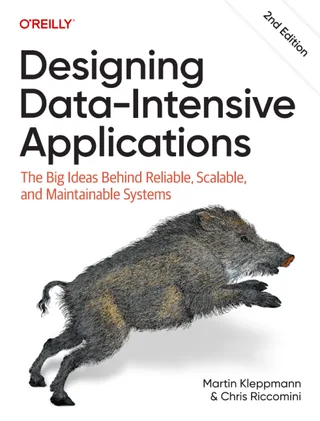
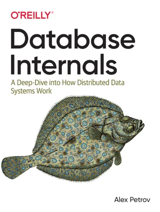
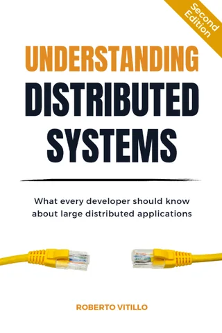
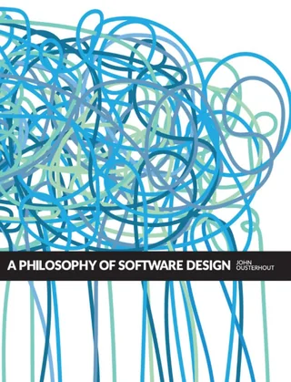

Four books that complete the picture.
This guide teaches the breadth; these books teach the depth. If you only read one, make it DDIA. If you're targeting payments or logistics roles, pair them with the applied designs.

Designing Data-Intensive Applications
The single most recommended book for system design interviews. Replication, partitioning, consistency, batch vs stream — the theory behind every page in this guide.
- Covers
- 01 · Distributed systems, 02 · Data & storage, 05 · Reliability & observability, 06 · Performance & scale
- In the study plan
- Week 1 weekend: chapters 5–7 of the 1st edition (replication, partitioning, transactions). The checklist asks for 1st-edition chapters 5–9.

Database Internals
B-trees, LSM trees, WAL, MVCC, storage engine internals. When an interviewer asks “why Postgres over Cassandra”, this gives you the engine-level reasoning.
- Covers
- 02 · Data & storage, in depth
- In the study plan
- Week 2 weekend: the chapters on B-trees and LSM trees.

Understanding Distributed Systems
A gentler entry point than DDIA. Consensus, failure detection, replication — good for reinforcing pillar 01 before going deeper.
- Covers
- 01 · Distributed systems, as reinforcement
- In the study plan
- Not scheduled. Read it before DDIA if pillar 01 felt heavy.

A Philosophy of Software Design
Not about systems — about complexity, abstractions and API surfaces. Deep modules, information hiding, tactical vs strategic programming. The senior mindset book.
- Covers
- Code design and senior thinking, rather than one pillar
- In the study plan
- Week 3 weekend. It is short enough to finish in one.